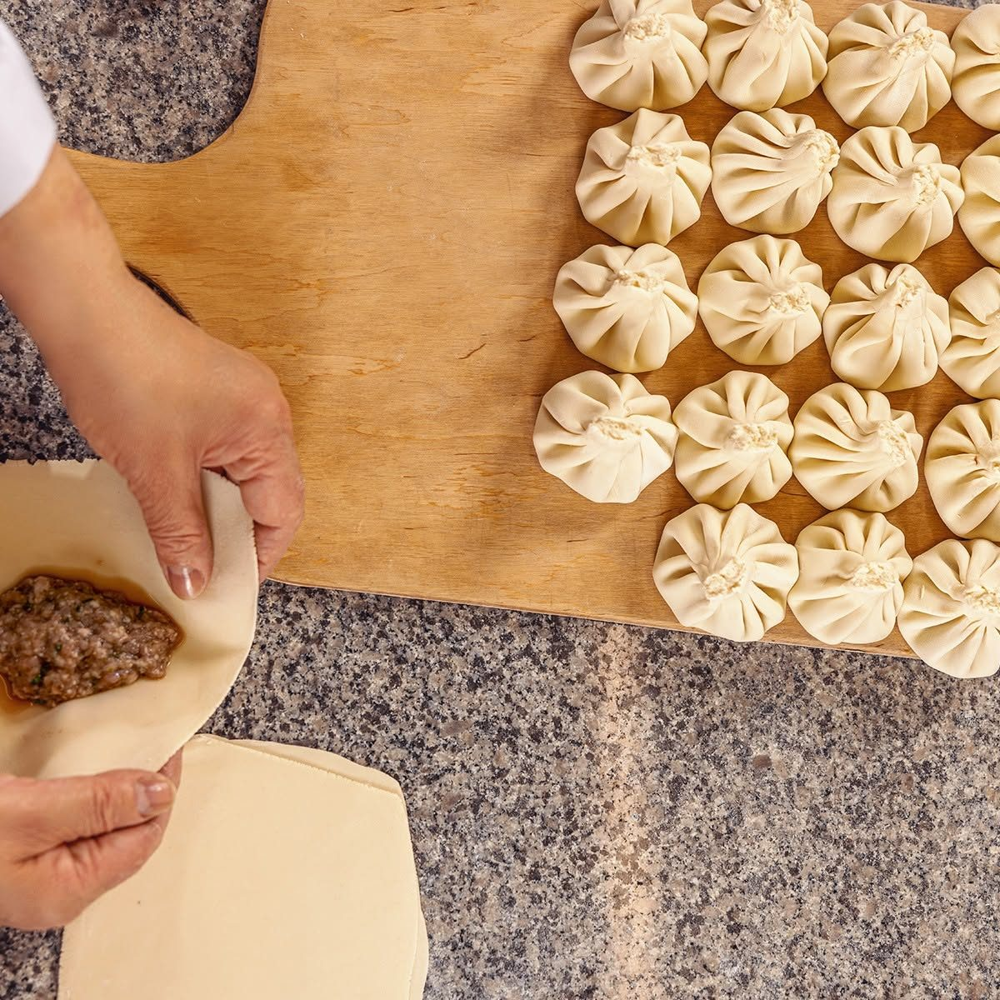
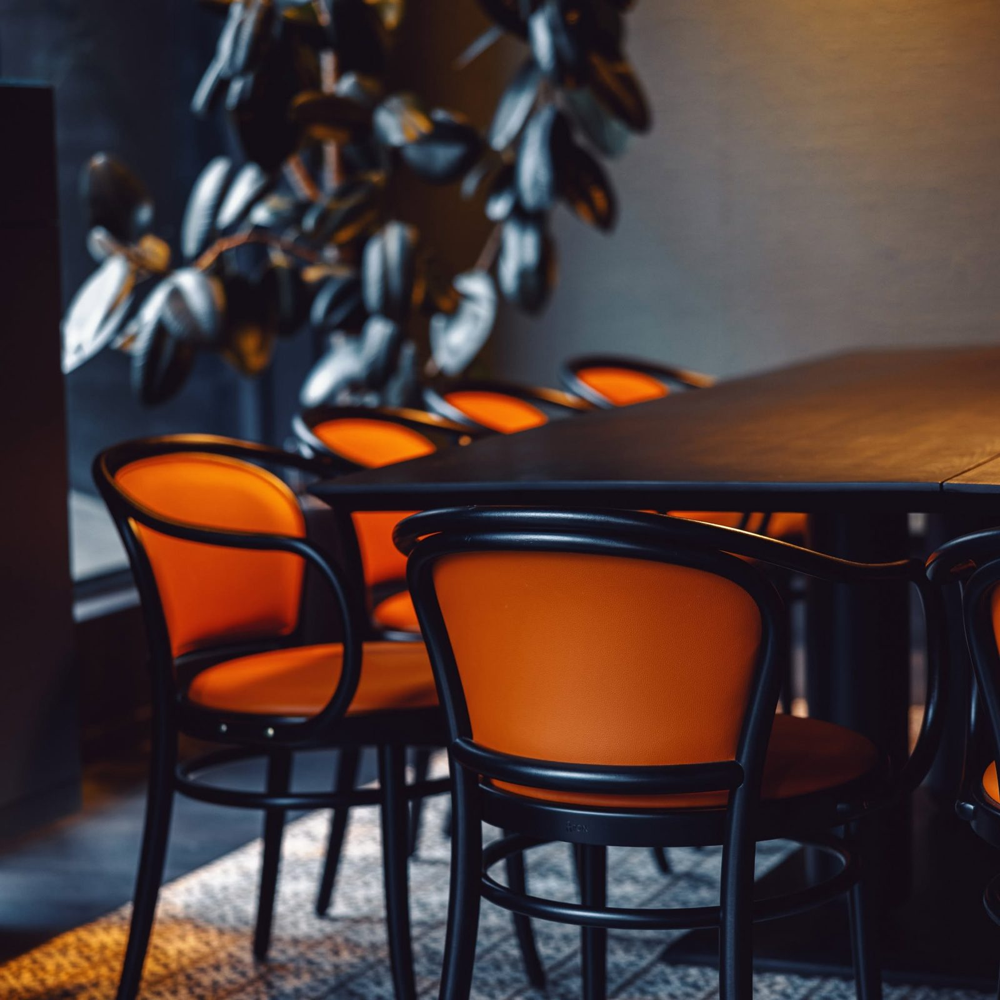
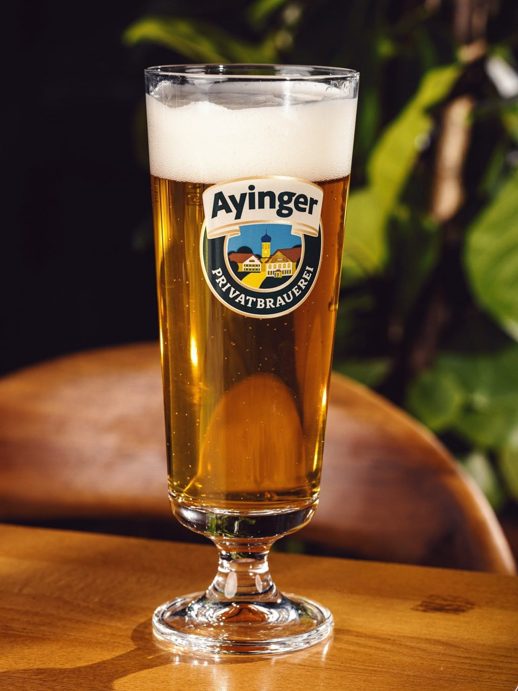
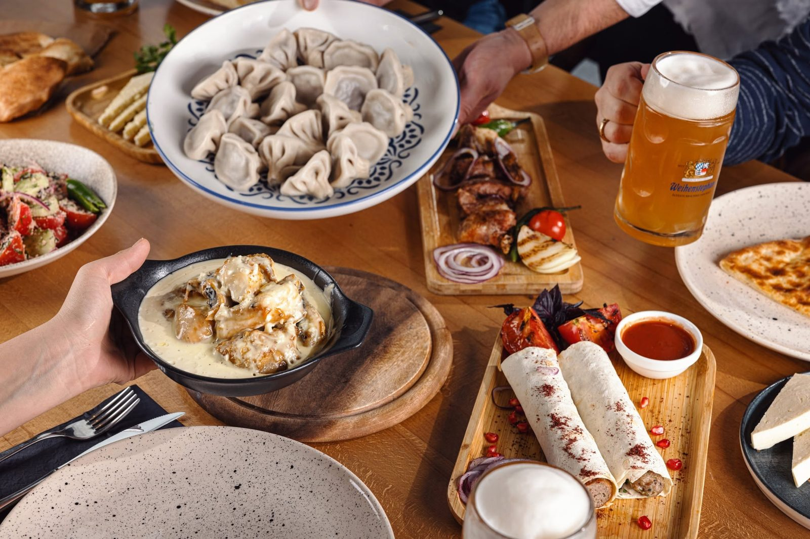
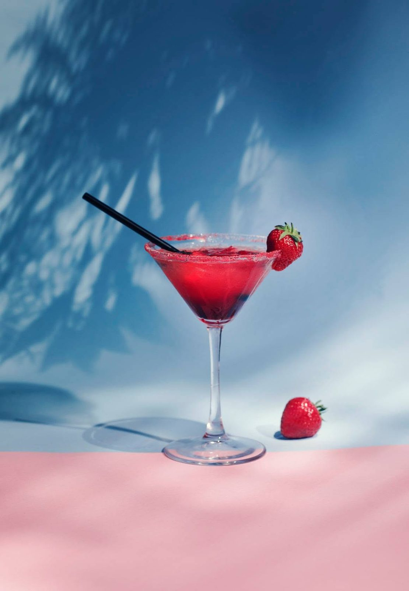
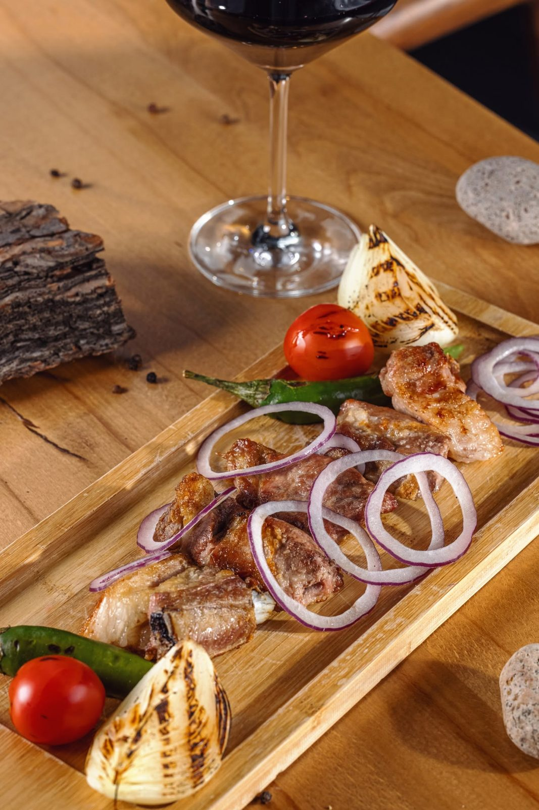
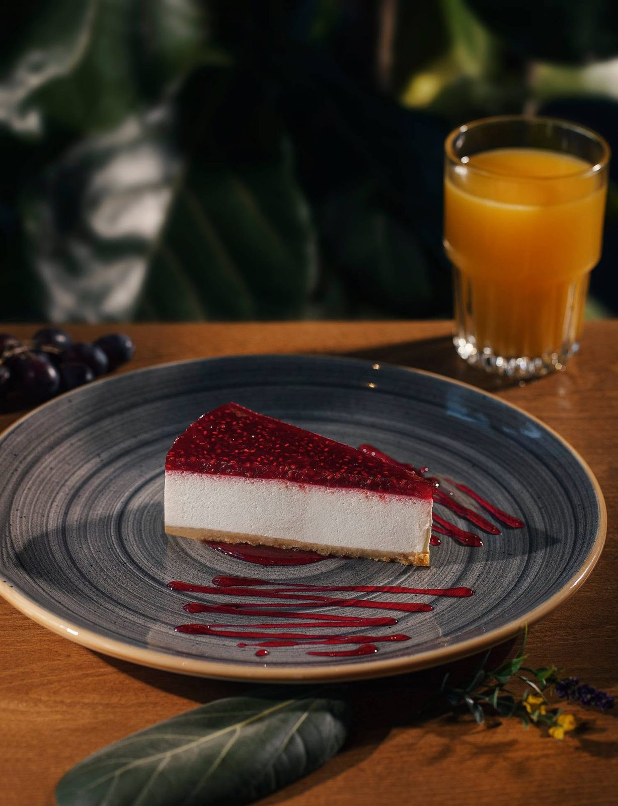

The Art of Folding the Perfect Khinkali
Twenty pleats, one knot, and decades of practice — inside the morning ritual that fills our kitchen.

Recipes, seasonal menus and tales from our table — a little taste of Tbilisi between visits.

Twenty pleats, one knot, and decades of practice — inside the morning ritual that fills our kitchen.

From a hoppy lager with mtsvadi to a dark ale beside lobio — our guide to the perfect pour.

More than a meal — the toasts, the tamada and the spirit that turns dinner into a celebration.

Tarragon, pomegranate and Georgian spirits — the bright flavours behind this season's menu.

Why vine-wood embers make all the difference, straight from our grill master Levan.

A peek into the pastry kitchen, where tradition meets a little modern whimsy.